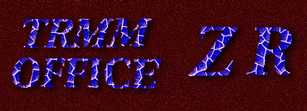

|  |
Construct ZR Table Software |
| Current Version:
1.14 |
Released Date: 09/08/03 |
Document updated:01/19/00 |
See Readme |
See Changes |
Download
Software |
Description
This software package developed by the TRMM
Satellite Validation Office is in GVBOX.
It contains the programs necessary for building ZR tables. These ZR tables
are stored as ASCII files.
NEW for 1.5: The
gauge_gui_main.pl has a new appearance, but, no new functionality.
NEW for 1.0: The
ZR table generation is fully automated. It is automated from the
2nd intermediate file through the ZR table. The progam
that does this is called automatic_zr.pl.
It is possible to perform no QC and provide your own gauge filter file.
It is possible to save the list of gauges, with their time range, that
were removed during the QC step.
NEW for 1.0: The
program
build_zr_table has been added.
This program has a command line interface to provide parameters to generate
the ZR table. It is identical in function as build_dual_zr_table.c,
but, has a command line interface. The program is only capable of
generating a ZR table for stratiform and convective rain types and for
a predetermined range dependancy: 0-15km, 15-100km, and beyond 100km.
The ZR table is meaningfull for the
range 15-100km.
NEW for 0.26: The software contains the automated
quality control of the merged gauge and radar dataset. The result
of the quality control is a new merged gauge and radar dataset that only
contains data that is acceptable -- all bad, or suspect, gauges have been
removed. This program is called
automatic_qc.pl.
Each ZR table may contain multiple ZR relationships.
Typically, each ZR table represents the ZR relationships for all raintypes.
For example, a single ZR contains a ZR relationship for only one rain classification.
In such a case, only one ZR relationship is present in the ASCII file,
whereas a dual ZR contains a ZR relationship for each of two rain types.
In such a case, both ZR relationships are present in the ASCII file; one
is listed after the other. The ZR table is then used as input for processing
the 2A-53 product (2A-53
is rain rate product in the second level of GVS).
The construction of ZR tables requires the products
2A-54
and 2A-55 from GVS, and
the gauge data as shown in the Flow Diagram
below. From the flow diagram, several major independent processing steps
are involved to produce the ZR tables file. The result file from the first
step will be used by the second step, the result file from the second step
will then be used by the third step, and so on. The major processing steps
are:
-
Extract radar window and Convective/Stratiform classifications
for a time period (i.e., pentad, monthly) using 2A-54 and 2A-55 products
and gauge site locations information. The output is the first ZR intermediate
file.
-
Merge radar data (the first ZR intermediate file)
and gauge data . The output is the second ZR intemediate file.
-
Run the automatic ZR table generator: automatic_zr.pl.
How to Build a ZR Tables File
Follow the steps below to build a ZR tables file.
-
Extract Radar Data: To extract radar data
over rain gauge data for a period (i.e., monthly), run one of the following
programs multiple times:
-
process_first_zr_inter_product_for_tape
--Perform data extraction for one tape of 2A-54 and 2A-55 products
residing on disk.
-
process_first_zr_inter_product_for_tapes -- Perform
data extraction for multiple tapes of 2A-54 and 2A-55 products residing
on disk.
-
get_radar_data_over_gauge--
Perform data extraction for a single pair of 2A-54 and 2A-55 products residing
on disk.
-
process_first_zr_inter_product_for_non_hdf_files
--Perform data extraction for either UF or raw radar data files residing
on either disk or tape; it processes1C-51, 2A-54 and 2A-55 products before
it does data extraction. This program has options to keep 1C-51, 2A-54,
and 2A-55 products on disk upon finishing.
(This step needs the gauge
site locations data)
-
Run first2ascii to convert the output (in
GDBM format) from the previous step to ASCII format. This step will
not be necessary once the interface of merge_radarNgauge_data accepts
the GDBM format. It is in development now.
-
Merge Radar and Gauge Data: Run merge_radarNgauge_data
using the output from the previous step as input. (This step needs the
gauge
database).
-
Run the automated ZR table generation program, automatic_qc.pl.
This program performs Quality Control on
the second ZR intermediate file, determines the R/G bulk adjustments, then
applies those adjustments to generate a ZR table.
Comparing 2A-53 with gauge data
This step follows the production of 2A-53.
Production of 2A-53 requires quality controled gauge data and the ZR tables
as described above. To summarize:
-
get_2A53_data_over_gauge
-- Identical in function to get_radar_data_over_gauge
except that the input is only 2A-53 rather than 2A-54 and 2A-55.
-
first2ascii to convert the gdbm output of
get_2A53_data_over_gauge
to ascii.
-
merge_radarNgauge_data
-
Perform Quality Control.
Really, you're not QC-ing the data, but, merely using the software to generate
plots to show how well the 2A-53 and gauge accumulations match.
An example:
get_2A53_data_over_gauge 2A53.980207.1.MELB.1.HDF
zzzz.gdbm
get_2A53_data_over_gauge 2A53.980207.2.MELB.1.HDF
zzzz.gdbm
get_2A53_data_over_gauge 2A53.980207.3.MELB.1.HDF
zzzz.gdbm
(Execute
for all granules, it appends to zzzz.gdbm)
first2ascii zzzz.gdbm > zzzz.ascii
merge_radarNgauge_data -f /rain2/merritt/melb_gauge.gdbm
zzzz.ascii zzzz_2nd.ascii
Filter out unwanted gauges; this is known from
previous QC.
gauge_filter.pl -f gauge.filter zzzz_2nd.ascii
> zzzz_3rd.ascii
Now for the plotting. Note:
-R.
gauge_radar_plot_batch.pl -f gaugefilter.file
-R zzzz_3rd.ascii
-or-
gauge_gui_main.pl (interactive:
use zzzz_3rd.ascii)
Flow Diagram

Authors
-
Mike Kolander, Science Systems and Applications Inc.(SSAI),NASA/GSFC/TRMM
Satellite Validation Office
-
John H. Merritt, SM&A, NASA/GSFC/TRMM Satellite
Validation Office
-
Ngoc-Thuy Nguyen, SSAI, NASA/GSFC/TRMM Satellite
Validation Office